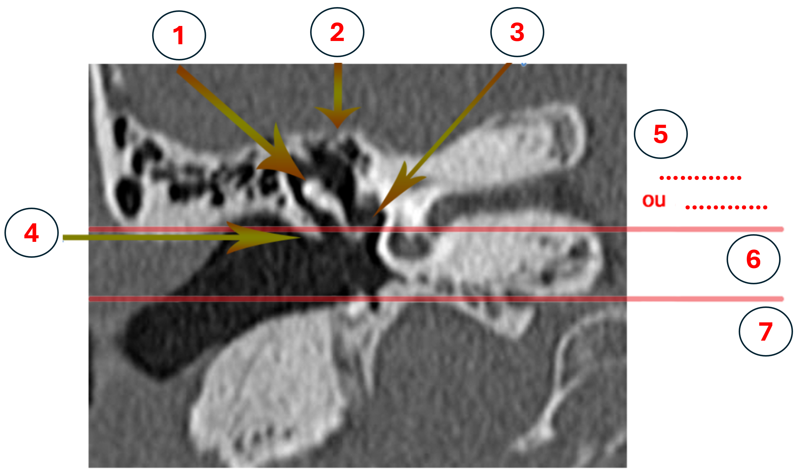

(1) Tête marteau + manche enclume
(2) Tegmen Tympani
(3) Fenêtre ovale
(4) Mur de l'attique
(5) Epitympan ou attique
(6) Mésotympan
(7) Hypotympan.
Risque de brèche durale, risque orbitaire, risque hémorragique.
Blood Oxygen Level Dependent.
Aire de Broca et aire de Wernicke.
Les cellules ethmoïdales : les seules pneumatisées à la naissance.
Les sinus maxillaires : visibles vers 18 mois (parfois 6 mois), pneumatisation se termine vers 15 ans.
Les sinus sphénoïdaux : apparaissent vers 3/4 ans, pneumatisation terminée vers 15 ans.
Les sinus frontaux : apparaissent vers 3/7 ans, peuvent se développer jusqu’à l’âge de 20 ans.
Nasopharynx : haut (sa limite postérieure est le fascia pharyngo-basilaire).
Oropharynx : milieu (paroi supérieure : limite palais mou/palais dur ; paroi inférieure : vallécules).
Hypopharynx : bas (ouvert en avant sur le larynx).
La consommation d’oxygène dans la zone activée par la tâche (passage de l’oxyHb à la carboxyHb). Il est possible de suivre la vasodilatation artériolaire qui correspond aux besoins en O2 de l’activité neuronale. La réponse est donc hémodynamique, il y a un couplage neuro-vasculaire.
C'est une séquence d’action (tâches à faire par le patient) en bloc ou en événementiel. Un paradigme en bloc correspond à une alternance de périodes d’action et de repos.
Complétion de phrase, écoute passive, nommage d’objet, génération de mots, fluence verbale, recherche de rime.
Exemple en bloc : alternance entre répétition de stimuli (penser à des mots commençant par une lettre donnée) et repos.
3 catégories : expression (Broca), compréhension (Wernicke), sémantique (latéralisation).
La zone du langage n'est pas toujours au même endroit selon les patients. Il est nécessaire de la localiser précisément pour éviter de l’abîmer lors de la chirurgie (tumeurs, lésions focales). C'est un examen non invasif d'aide à la planification chirurgicale.
Les séquences de perfusion (avec ou sans injection de produit de contraste) et la séquence BOLD (avec tâche pour l’activation ou sans tâche pour le "resting state").
Scanner : Oreille externe et Oreille moyenne.
IRM : Oreille interne.